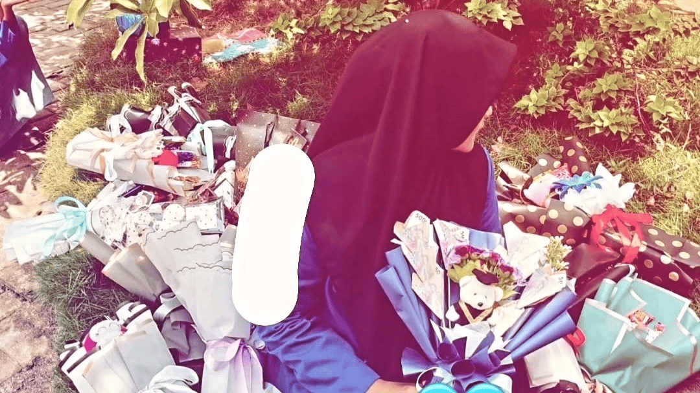

Bagaimana Caranya Memilikimu Secara Sempurna? Aku Sudah Capek Menjadi Pengagummu.
Beginilah Cara Rouf, Seseorang Yang Mungkin Tak Pernah Kamu Sadari, Mengungkapkan Kekagumannya Dari kejauhan, Aku Telah Melihat Cahayamu Bersinar, Berharap Suatu Hari Nanti Kamu Akan Menyadarinya. Tapi untuk saat ini, Beginilah Cara Rouf Mengungkapkan Perasaan Yang Sebenarnya. I Love You >3